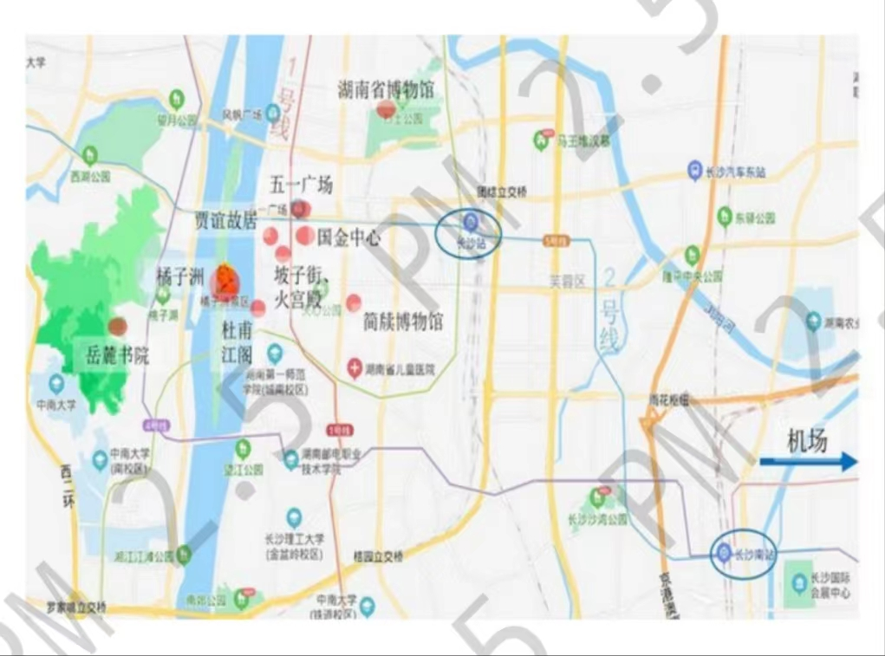

长沙旅游攻略

长沙市，别称星城，湖南省辖地级市、省会、特大城市，国务院批复确定的长江中游地区重要的中心城市、长株潭城市群中心城市。地处华中地区，湖南省东部偏北，属亚热带季风气候。是全国“两型社会”综合配套改革试验区、中国重要的粮食生产基地，长江中游城市群和长江经济带重要的节点城市，综合交通枢纽和国家物流枢纽。
住址选择

方案一：五一广场附近
地铁一号线的中转站，出行很方便，绝大部分打卡景点都离五一广场很近。
方案二：沿2号地铁线附近住
2号线连着火车站、高铁站；还连着最热闹的五一广场、橘子洲、岳麓山、甚至梅溪湖。
方案三：岳麓山大学城
吃住玩都比五一广场要实惠很多，味道也不错，玩的就岳麓山，除了岳麓山要门票，其他都是免费参观。